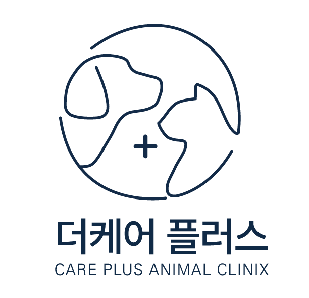
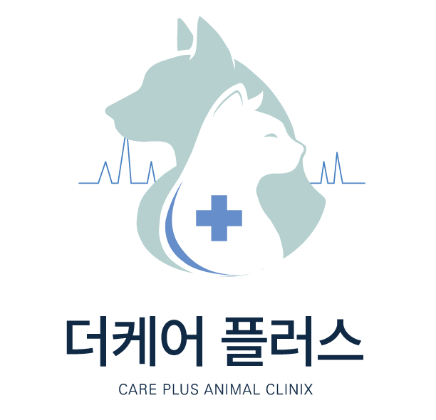
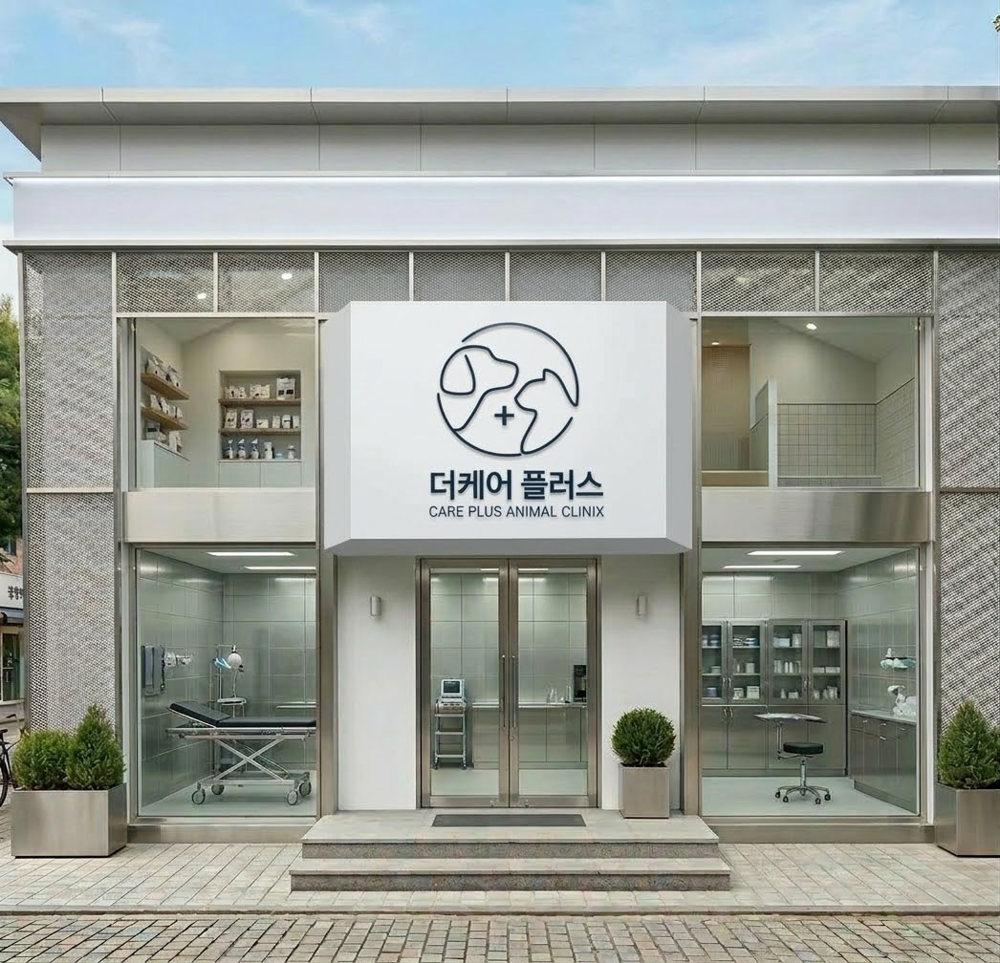

브랜딩 / 로고디자인
더케어플러스 (THE CARE PLUS)
프로젝트 정보
역할
브랜드 콘셉트 기획 및 시각 아이덴티티 개발
연도
2026
유형
개인프로젝트
분야
Logo Design
기여도
100%
프로젝트 개요
더케어플러스(CARE PLUS)는 프리미엄 동물의료센터를 가정하여 진행한 로고 디자인 프로젝트입니다. 브랜드 방향에 따라 기본 라인형과 프리미엄 심볼형 두 가지 아이덴티티 시안을 개발하였습니다. 강아지와 고양이를 함께 진료하는 종합 동물병원을 설정하고, 신뢰와 전문성을 중심 가치로 삼되 청결하고 모던한 이미지를 전달하는 데 중점을 두었습니다.
프로젝트 완성
< 기본라인형 >

< 프리미엄 라인형 >


주요작업
- 브랜드 콘셉트 기획 및 방향성 설정 - 강아지·고양이 실루엣 구조 연구 및 스케치 - 기본 라인형 / 프리미엄 심볼형 2가지 시안 개발 - 단색 라인 시스템 설계 및 선 두께 통일 - 의료 상징(+) 요소 위치 및 크기 조정 - 국문·영문 타이포그래피 조합 및 자간 조정
두 시안 비교설명
① 기본 라인형 → 보호자에게 친근하면서도 정돈된 인상을 주는 방향으로 디자인 하였습니다. - 단색 라인 중심의 미니멀 구조 - 강아지와 고양이를 연결된 선으로 표현 - 의료 상징을 최소화하여 안정감 강조 - 청결하고 모던한 이미지 전달 ② 프리미엄 심볼형 → 전문 의료센터의 신뢰감과 브랜드 무게감을 강조한 방향으로 디자인 하였습니다. - 실루엣을 면 형태로 구성하여 존재감 강화 - 의료 상징을 명확히 배치하여 전문성 강조 - 안정적인 구조와 균형감 있는 비율 설계 - 저채도 블루·그린 컬러를 사용하여 의료기관 특유의 안정감과 무게감을 표현
인사이트
이번 프로젝트를 통해 동물병원 로고는 단순히 귀여운 동물 이미지를 사용하는 것이 아니라, 신뢰와 안정감을 어떻게 시각적으로 설계할 것인가가 핵심이라는 점을 고민하게 되었습니다. 특히 두 가지 시안을 비교하며 라인의 단순화 정도, 의료 상징의 강도, 선의 두께 차이에 따라 브랜드 인상이 크게 달라진다는 것을 체감했습니다. 또한 실루엣 표현에서 불필요한 디테일을 줄이고 균형과 여백을 조정하는 과정이 로고 완성도를 좌우한다는 점을 배울 수 있었습니다.